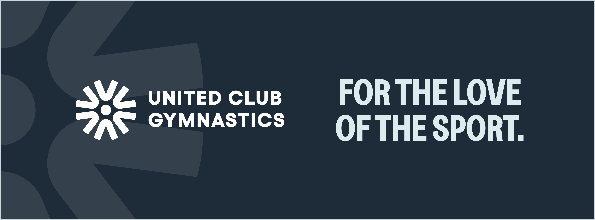
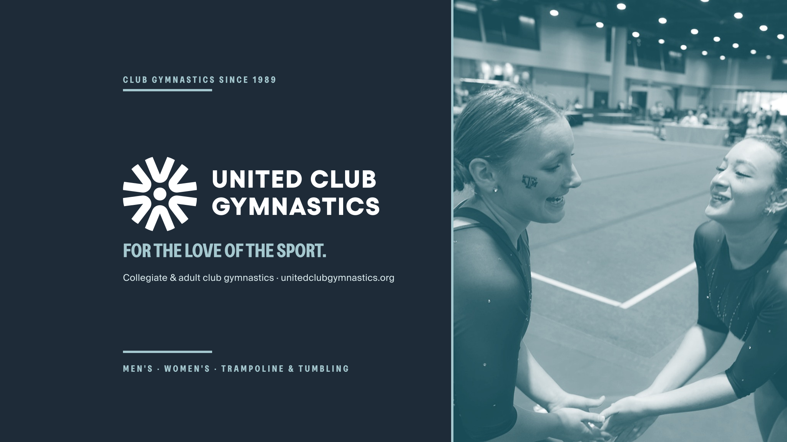
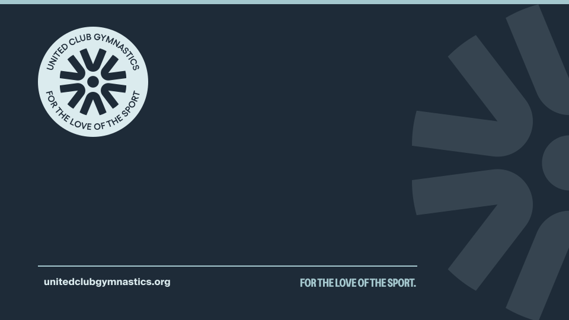

Formats
| Format | Size |
|---|---|
| Instagram feed post | 1080 × 1350 (4:5) preferred, or 1080 × 1080 |
| Instagram / Facebook story, Reel cover | 1080 × 1920 (keep text inside the middle 1080 × 1420) |
| Facebook cover | see assets/social/ucg-facebook-cover.png (has safe zone built in) |
| YouTube banner | 2048 × 1152, assets/social/ucg-youtube-banner-2048x1152.png |
| Zoom background | assets/social/ucg-zoom-background.png (and -mirrored) |
| Avatar | assets/logos/ucg-avatar-circle.png / ucg-avatar-square.png — don't alter the layout; seasonal recolors only within the palette |
Sizes
Avatars
Post recipes (from the design guide)
- Headline post: solid color fill (Blue Green, Navy, Light Blue, Golden Yellow or Purple) with a huge Greed / Saira Condensed ALL CAPS headline in Navy (or White / Blue Green on Navy), small logo or mark in a corner,
@unitedclubgymnasticshandle small. - Photo post: B&W photo, dynamic crop, White headline and graphics, optional Navy band or color overlay (B&W photo over a brand color, blend mode Screen) behind the text.
- Event / discipline post: event icons (MAG, WAG, T&T) large on a color block; "MAG · WAG · TNT" labels in condensed caps.
- Carousel: cover slide with the hook ("EVERYTHING YOU NEED TO KNOW FOR NATIONALS →"), one idea per slide (WHEN? WHERE? HOW TO SIGN UP?), arrow
→bottom right, last slide with the link in bio / URL. - Grid: alternate fills and photos across the 3-column grid so neighbors differ; keep type styles consistent.
- Rounded corners on photo frames and panels; a pill-shaped label for dates or categories.
Post recipes

Headline post: color fill, big type, small mark.

Photo post: B&W photo, White type on a Navy band.
Event post: event icons on a color block.
Carousel
Example content. One idea per slide, an arrow until the last.
Captions
Lead with the moment or the useful fact, then the next step. 1–3 short paragraphs. End with a few hashtags: #ucg plus one or two specific ones (#fortheloveofthesport, #adultgymnastics, #UCGNationals2027). Examples in messaging.md. Alt text for every image (Instagram → Advanced settings → Accessibility).
- Use CMYK / Pantone values from
brand.json(Navy PMS 2377, Blue Green 551, Light Blue 551 at 50%, Purple 270, Red Orange 7416, Dark Blue Green 7477, Golden Yellow 123). Swatch file:assets/palette/UCG_Colors.ase. - Vector logos (SVG, or the AI/EPS/PDF masters in the UCG toolkit) for anything printed large.
- File types: PDF for layouts, TIFF or high-res JPEG for photos, EPS/SVG for vector art.
- Small print (URL, phone, address) can be tiny Suisse / Arial, but keep it Navy on light or White on Navy.
Print colors
CMYK 46, 23, 0, 78
CMYK 20, 3, 0, 19
CMYK 8, 1, 0, 7
CMYK 26, 20, 0, 9
CMYK 0, 57, 70, 4
CMYK 72, 13, 0, 66
CMYK 0, 21, 84, 4
Social banners
Facebook cover, YouTube banner, Zoom backgrounds and the email header logo (ucg-email-header.png, navy background baked in so it survives dark mode). Their editable sources are the "05 Social & Digital" artboards in the toolkit's All UCG Assets.svg (live text in Greed and Suisse; each artboard remembers its export file name and size). The mirrored Zoom background is a clone of the regular one, so edit that one.




